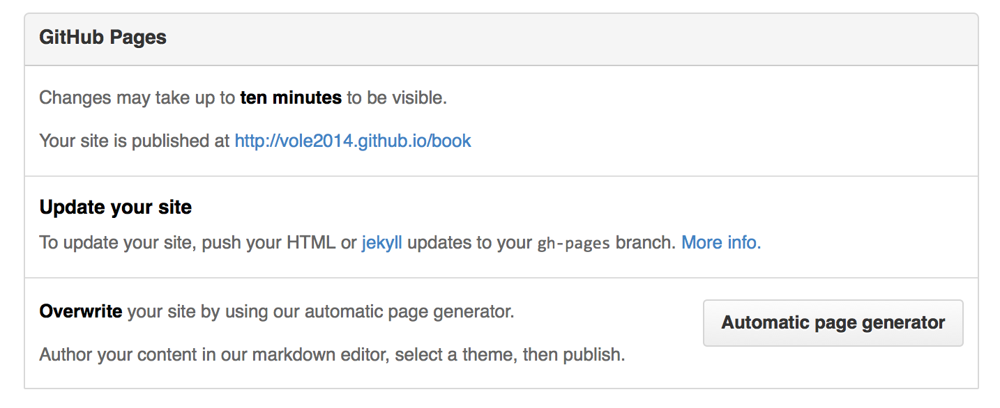

发布到github pages
将生编写好的格式为.md的文件通过Gitbook处理，然后再发布到Github Gages上去。我个人比较喜欢将源码，即.md文件与Github Pages静态文件存放在一个仓库中。.md文件为master分支，而hmtl文件为gh-pages分支。具体流程是这样的：
创建仓库与分支
- 登录到Github，创建一个新的仓库，名称我们就命令为
book，这样我就就得到了一个book的空仓库。 - 克隆仓库到本地：
git clone git@github.com:USER_NAME/book.git。 - 创建一个新分支：
git checkout -b gh-pages，注意，分支名必须为gh-pages。 - 将分支push到仓库：
git push -u origin gh-pages。 - 切换到主分支:
git checkout master。
经过这一步处理，我们已经创建好gh-pages分支了，有了这个分支，Github会自动为你分配一个访问网址：
你可以在项目页面右下settings中看到：

当然，由于我们内容还没有上传所以你点开链接，也只是一个404页面。
同步静态网站代码到分支
下面我们就可以将build好的静态网站代码同步到gh-pages分支中去了：
- 切换出master分支目录。我们需要将
gh-pages分支内容存放到另一个目录中去。 - 克隆
gh-pages分支：git clone -b gh-pages git@github.com:USERNAME/book.git book-end。这步我们只克隆了gh-pages分支，并存放在一个新的目录book-end里面。 - Copy静态多站代码到
book-end目录中。 - Push到仓库。
然后，等十来分钟的样子，你就可以访问到你的在线图书了。而后，每次修改之后，都可以将生成的代码Copy到book-end目录，再Push一下就OK了。
当然，对于gh-pages存放问题，你也可以直接在master分支目录中直接git clone gh-pages分支，假如名称为book-end，然后修改一下.gitignore文件，将book-end/添加进去，这样主分支就不会理会book-end内容的修改了。
笔者曾试过直接使用gitbook build --output=/PATH/book-end这个方式输出到gh-pages分支目录中，但发现gitbook在build的时候，相当于删除存在的这个目录，然后再新建目录，再写入内容，原来的git信息会完全删除掉，显示这不是我们想要看到的，所以只能Copy才行。